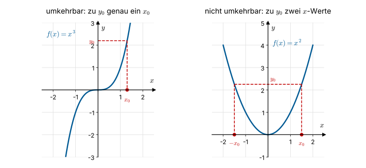
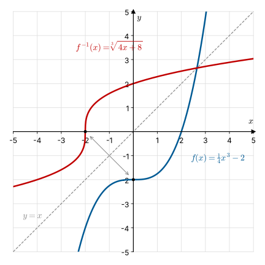
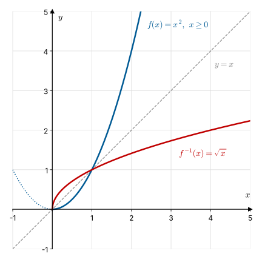

2.6 Umkehrfunktion#
Hinweis
In den ersten zwei Kapiteln wiederholen Sie Schulstoff. Bitte arbeiten Sie in der Vorlesung und in der Übung mit und wiederholen Sie die Inhalte mit Ihrer Vorlesungsmitschrift. Arbeiten Sie bei Bedarf ergänzend mit diesem Skript und den darin verlinkten Videos. Die Inhalte dieser zwei Kapitel sind die Grundlage für alle weiteren Themen in diesem und dem nächsten Semester. Es handelt sich um elementare Kenntnisse und Fertigkeiten.
Lernziele#
Lernziele Umkehrfunktion
Sie wissen, was eine Umkehrfunktion ist und wann eine Funktion umkehrbar ist.
Sie können am Funktionsgraphen entscheiden, ob eine Funktion umkehrbar ist.
Sie können die Umkehrfunktion berechnen, indem Sie die Funktionsgleichung nach \(x\) auflösen.
Sie können eine Funktion durch Einschränken der Definitionsmenge umkehrbar machen.
Sie wissen, dass der Graph der Umkehrfunktion durch Spiegelung an der Winkelhalbierenden \(y = x\) entsteht.
Die Frage umdrehen#
Bei unserer Kugelbahn aus 2.1 Grundlagen und Definition haben wir gefragt: Wie hoch ist die Kugel an der Position \(x\)? Die Antwort liefert die Funktion
Genauso gut können wir die Frage umdrehen: An welcher Position ist die Kugel \(h\) cm hoch? Dazu lösen wir die Funktionsgleichung nach \(x\) auf:
Für eine Höhe von \(h = 3~\text{cm}\) erhalten wir zum Beispiel \(x = 24 - 4 \cdot 3 = 12~\text{cm}\). Die neue Zuordnung \(h \mapsto x\) ordnet jeder Höhe aus \([0; 6]\) genau eine Position aus \([0; 24]\) zu. Sie ist also wieder eine Funktion, die sogenannte Umkehrfunktion.
Definition#
Eine Funktion \(f: D \to W, \; x \mapsto f(x) = y\) ordnet jedem \(x\) genau ein \(y\) zu. Für die Umkehrfunktion brauchen wir zusätzlich, dass auch die umgekehrte Zuordnung \(y \mapsto x\) eindeutig ist.
Was ist … eine Umkehrfunktion?
Sei \(f: D \to W, \; x \mapsto f(x) = y\) eine Funktion. Wenn auch die Zuordnung \(y = f(x) \mapsto x\) eindeutig ist, dann heißt
die Umkehrfunktion von \(f\), und \(f\) heißt umkehrbar.
Die Umkehrfunktion vertauscht die Rollen von Definitionsmenge und Wertemenge:
Wann ist eine Funktion umkehrbar?#
Ob eine Funktion umkehrbar ist, sieht man am Funktionsgraphen. Wir wählen einen Wert \(y_0\) auf der \(y\)-Achse und suchen alle \(x\), die auf \(y_0\) abgebildet werden.


Fig. 3 Links ist die Zuordnung \(y \mapsto x\) eindeutig, rechts nicht (Quelle: eigene Darstellung; Lizenz: CC BY-SA 4.0)#
Bei \(f(x) = x^3\) gehört zu jedem \(y_0\) genau ein \(x_0\). Die Zuordnung \(y \mapsto x\) ist eindeutig, \(f\) ist umkehrbar.
Bei \(f(x) = x^2\) gehören zu \(y_0 > 0\) die beiden Werte \(x_0\) und \(-x_0\), denn \(x_0^2 = (-x_0)^2\). Die Zuordnung \(y \mapsto x\) ist nicht eindeutig, \(f\) ist nicht umkehrbar.
Anschaulich bedeutet das: Eine Funktion ist umkehrbar, wenn jede waagerechte Gerade den Graphen höchstens einmal schneidet. Das ist zum Beispiel bei jeder streng monotonen Funktion der Fall (siehe 2.2 Eigenschaften von Funktionen).
Umkehrfunktion berechnen#
Die Umkehrfunktion berechnen wir in zwei Schritten:
Die Gleichung \(y = f(x)\) nach \(x\) auflösen. Das ergibt \(x = f^{-1}(y)\).
Für die Darstellung im selben Koordinatensystem die Variablen umbenennen: \(y\) wird zu \(x\). Das ergibt \(f^{-1}(x)\).
Beispiel: Gesucht ist die Umkehrfunktion von \(y = f(x) = \frac{1}{4}x^3 - 2\) mit \(D_f = W_f = \mathbb{R}\).
Wir lösen nach \(x\) auf:
\(\begin{align*} & & y &= \frac{1}{4}x^3 - 2 & & | +2\\ &\Leftrightarrow & \frac{1}{4}x^3 &= y + 2 & & | \cdot 4\\ &\Leftrightarrow & x^3 &= 4y + 8 & & | \sqrt[3]{\phantom{x}}\\ &\Leftrightarrow & x &= \sqrt[3]{4y + 8} \end{align*}\)
Die Umkehrfunktion ist also \(f^{-1}(y) = \sqrt[3]{4y + 8}\). Zur Darstellung im selben Koordinatensystem schreiben wir
Probe mit einem Zahlenwert: \(f(2) = \frac{1}{4} \cdot 2^3 - 2 = 0\) und \(f^{-1}(0) = \sqrt[3]{4 \cdot 0 + 8} = 2\).


Fig. 4 Funktion \(f\) (blau) und Umkehrfunktion \(f^{-1}\) (rot) liegen spiegelbildlich zur Winkelhalbierenden \(y = x\) (Quelle: eigene Darstellung; Lizenz: CC BY-SA 4.0)#
Durch das Umbenennen der Variablen tauschen die \(x\)- und \(y\)-Koordinaten jedes Punktes ihre Rollen. Aus dem Punkt \((0, -2)\) auf dem Graphen von \(f\) wird der Punkt \((-2, 0)\) auf dem Graphen von \(f^{-1}\). Der Graph der Umkehrfunktion entsteht daher durch Spiegelung an der Winkelhalbierenden \(y = x\).
Definitionsmenge einschränken#
Die Funktion \(y = f(x) = x^2\) mit \(D_f = \mathbb{R}\) ist nicht umkehrbar, denn zu einem \(y > 0\) gibt es zwei \(x\)-Werte \(x_1\) und \(x_2 = -x_1\). Wir können sie aber umkehrbar machen, indem wir die Definitionsmenge einschränken, zum Beispiel auf
Jetzt lösen wir nach \(x\) auf:
\(\begin{align*} & & y &= x^2 & & | \sqrt{\phantom{x}}\\ &\Leftrightarrow & \sqrt{y} &= \sqrt{x^2}\\ &\Leftrightarrow & \sqrt{y} &= |x| & & | \; x \geq 0\\ &\Leftrightarrow & \sqrt{y} &= x \end{align*}\)
Die Umkehrfunktion ist also \(x = f^{-1}(y) = \sqrt{y}\), im selben Koordinatensystem \(f^{-1}(x) = \sqrt{x}\), mit


Fig. 5 Die Normalparabel für \(x \geq 0\) (blau) und die Wurzelfunktion (rot) (Quelle: eigene Darstellung; Lizenz: CC BY-SA 4.0)#
Hätten wir stattdessen \(D_f = \{x \in \mathbb{R} : x \leq 0\}\) gewählt, wäre im dritten Schritt \(|x| = -x\) und die Umkehrfunktion \(f^{-1}(x) = -\sqrt{x}\).
Zusammenfassung und Ausblick#
Eine Funktion ist umkehrbar, wenn auch die umgekehrte Zuordnung \(y \mapsto x\) eindeutig ist. Die Umkehrfunktion \(f^{-1}\) berechnen wir, indem wir \(y = f(x)\) nach \(x\) auflösen und anschließend die Variablen umbenennen. Ihr Graph ist das Spiegelbild des Graphen von \(f\) an der Winkelhalbierenden. Ist eine Funktion nicht umkehrbar, hilft oft eine Einschränkung der Definitionsmenge.
Umkehrfunktionen begegnen Ihnen immer wieder: Der Logarithmus ist die Umkehrfunktion der Exponentialfunktion (siehe 2.4 Exponential- und Logarithmusfunktion), und in Kapitel 10 lernen Sie, wie man Umkehrfunktionen ableitet.